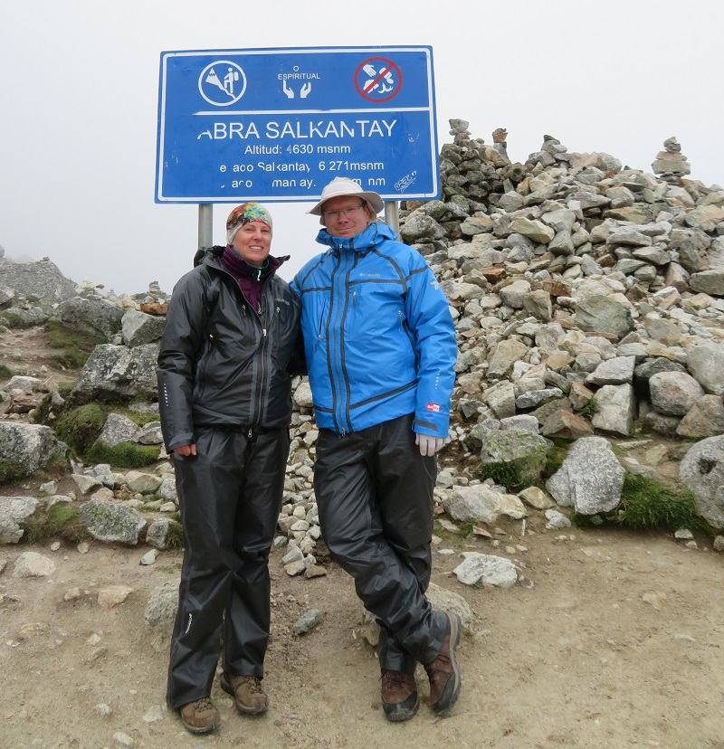

Welcome
Welcome to our 2016 vacation photo galary.
From December 14, 2016 to January 3, 2017 we went on our biggest adventure yet. Traveling first to the Galapagos Islands, followed by a few days in the Peruvian Amazon, and closing things of with a 7 day hike from Cusco to Machu Picchu following the Salkantay Trek.
On the left hand side you'll find the navigation pane to browse the picture galaries for each day we were gone. Some days are missing, either because we were traveling all day to get to our next destination, or our camera drowned.
Oh, and have patience. Shanon likes to take lots and lots of pictures ;)
